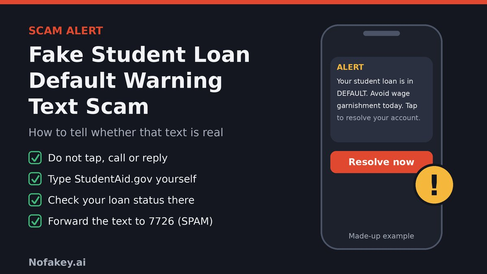

"ALERT: Your student loan is in DEFAULT. Avoid wage garnishment today." Your phone buzzes, the message is short and frightening, and there is a link to "resolve" it. Even if you are not sure which loans you have, or you thought you were up to date, your stomach drops. That reaction is the whole plan. The scammer does not need to know anything about you. They only need you to tap before you think.
What is the fake student loan default warning text scam?
It is a text-message scam, sometimes called smishing, that borrows the language of student loan collections. Instead of promising forgiveness, it threatens something: default, collections, wage garnishment, a seized tax refund or even legal action. The message then offers a way out through a link, a phone number or a payment.
It works because the threats are not made up. Federal student loans can go into default, and the government has real tools for collecting on them. That gives scammers a believable script. The Federal Trade Commission says text scams are a big channel for fraud: it reported that consumers said they lost $470 million in 2024 to scams that started with a text message, though most of that was not student loan related, and the most common type was the fake package delivery alert, according to its data spotlight.
These texts tend to take one of three forms:
- The pay-now text. It says you are in default and links to a "payment" or "resolution" page.
- The call-us text. It gives a phone number and a deadline, so a "specialist" can pressure you live.
- The conversation starter. It looks like a casual message from a person and asks you to reply, so the scammer can build a relationship before asking for anything.
How the scam works, step by step
- The blast. The same text goes to huge numbers of phones. Many recipients have no student loans at all, which is why generic texts often contain no name, servicer or loan type.
- The scare. "Default", "final notice", "garnishment", "collections", "tax refund seizure". A deadline of hours or "today" is common.
- The exit. A link to a fake "resolution" site, a phone number, or an invitation to reply.
- The collection. The page or caller asks for your FSA ID, Social Security number, date of birth, bank login or a card number, or asks you to pay a "settlement" or "reinstatement" amount.
- The escalation. If you pay, there may be another fee. If you gave your FSA ID, someone may sign in as you, change your contact details or repayment plan, and cut you off from real notices.
Why this angle matters right now
The scam rides on news. The Department of Education resumed collections on defaulted federal loans in 2025, announced wage garnishment notices for early 2026, and then in January 2026 announced a delay of involuntary collections, including wage garnishment and the Treasury Offset Program. In the October 2026 coverage I found, no restart date had been confirmed. Collection policy keeps shifting, which leaves borrowers confused about what is real, and a text that says "your wages will be garnished today" can sound plausible. Always check the current status at StudentAid.gov, because this can change.
What real default notices look like, and what a scam text does differently
Many scam guides say "never trust texts" and stop there. These are the stages where a real borrower might hear about a problem, and how a scam text differs. Policies change, so confirm current details on the official sites listed at the end.
| Stage | What it usually looks like | What the scam text does |
|---|---|---|
| Missed payments | Reminders and past-due notices from your servicer, through your account, email, mail or alerts you set up | Skips straight to "default" with no loan name, servicer or account detail |
| Default | For most federal loans, the Department of Education generally treats a loan as in default after more than 270 days of missed payments. Your loan status is visible when you sign in to StudentAid.gov. | Declares you in default "today" with no way to check, or says you are in default when you are not behind at all |
| Wage garnishment or tax refund offset | Official written notice first. News reports citing the Department say at least 30 days' notice before wages can be garnished. Involuntary collections were delayed in January 2026, so check the current status. | "Your wages will be garnished Friday", or "reply YES to stop your refund being seized" |
| Getting out of default | Options such as rehabilitation, consolidation and repayment plans, arranged through your servicer or the Department. Help with federal loans is free. | A "reinstatement fee", a "settlement" payment, or "enrollment" in a program for a charge |
| Paying | Through your servicer's or the Department's own site, which you reached by typing the address or using a bookmark | A link in the text, gift cards, wire transfers, crypto or a payment app to a person |
A fair caution. Some servicers do send text alerts to borrowers who signed up for them, so receiving a text about a loan is not automatically fake. The test is whether you can verify the message yourself, starting from a website you typed, and whether it asks you to pay, log in or share details through the text.
What scammers are after
| What they get | How they use it |
|---|---|
| A "resolution" payment | You pay and your loan status does not change, and you may be asked for more |
| FSA ID (username and password) | Signing in as you, changing contact details or plans and seeing personal and loan information. The Department of Education says no one except you should ever need your FSA ID. |
| Social Security number and date of birth | Opening accounts or applying for credit in your name |
| Bank or card details | Repeat charges and unauthorized withdrawals |
| A reply or a call | Confirms your number is active, so you get more scam texts and calls |
Realistic scam text examples
These are composite examples written to show the pattern. They are not reports about real people or real companies, and the numbers and addresses are made up.
Example 1: The "you are in default" text
- From
- An ordinary mobile number
ALERT: Your federal student loan is now in DEFAULT. Avoid wage garnishment today by resolving your account here: student-default-resolve.example/now
Why it's a scam: no loan name or servicer, an all-caps threat, a "today" deadline and a link on a domain that is not a government or servicer site.
Example 2: The "final notice" with a call-back number
- From
- A short code or a number that looks local
Final notice from the Dept of Education: your account 8841 has been referred to collections. Call (555) 010-0183 within 24 hrs to avoid legal action.
Why it's a scam: an invented account number, a vague "legal action" threat and a number you cannot verify. A live caller can then press you to pay or hand over details.
Example 3: The "garnishment on Friday" text
- From
- An unknown number
Your wages will be garnished on Friday. Stop it now by paying your outstanding balance of $2,340: pay-student-aid.example
Why it's a scam: real garnishment follows written notice, not a text a few days before. A made-up balance and a payment link are classic signs.
Example 4: The "confirm your FSA ID" text
- From
- "Student Aid Alerts" (a sender name anyone can type)
Student Aid Notice: We could not verify your account. Confirm your FSA ID within 12 hours to avoid default: fsa-confirm-id.example
Why it's a scam: the page behind it is built to capture your FSA ID. Never share it, and never sign in to StudentAid.gov through a link in a text.
Example 5: The "tax refund will be seized" text
- From
- An ordinary mobile number
Treasury offset notice: your tax refund will be seized because of a defaulted student loan. Reply YES to review your options.
Why it's a scam: it uses a real term but asks you to engage by text. The "reply YES" only tells the scammer your number is live and starts a conversation.
Example 6: The friendly "case manager" text
- From
- A number with a personal-looking name
Hi, this is Mark from Loan Resolution. Your file shows a default flag and I can get it removed today. Reply here and I will walk you through it. (Next day: "Last warning. Legal action will be filed if you do not respond.")
Why it's a scam: a friendly tone, a promise to "remove" a flag, then a threat when you do not answer. Credit reporting and default status cannot be fixed by a stranger texting you. A threat of legal action by text is a red flag.
Warning signs of a fake default text
- It arrived out of the blue from a number you do not recognize, or a sender name that anyone could type.
- It has no real details: no loan type, servicer, name or last digits of an account.
- It uses all caps and urgency: "ALERT", "FINAL NOTICE", "TODAY", "within 24 hours".
- It threatens garnishment, seizure, legal action or arrest, especially within hours.
- It includes a link to "resolve", "pay" or "verify", or tells you to call a number in the message.
- It asks for your FSA ID, Social Security number, bank login or card number.
- It wants an odd payment method: gift cards, wire transfer, crypto or a payment app to a person.
- It says you can be rescued for a fee, such as a "reinstatement" or "release" charge.
- It asks you to reply YES or STOP to a message you did not expect.
- It tells you not to contact your servicer, or not to log in anywhere else.
Quick check: score the text you received
Tick anything that matches. This is a rough guide, not a verdict, and it never leaves your browser.
How to check a suspicious link in a text
- Do not tap it. Press and hold the link to read the address without opening it, or just do not engage.
- Find the domain. It is the part right after
https://and before the first single/. Inhttps://studentaid.gov.default-help.com/pay, the real site isdefault-help.com, not studentaid.gov. - Read the ending first. The last parts decide who owns the page. Anything in front can be made up.
- Know what official looks like. Federal sites end in
.gov, such asstudentaid.gov,ed.govandftc.gov. Loan servicers are private companies, so their sites usually end in.comor.org. Take a servicer's address from StudentAid.gov or your statement, not from a text. - Watch for lookalike words: "default", "resolve", "garnishment", "notice", hyphens, and endings like
.topor.xyz. - Be careful with shortened links, which hide the real destination.
- Do not rely on the padlock. https only means the connection is encrypted. Fake pages can have it too.
- Never sign in to StudentAid.gov through a link. Type the address yourself.
Try the link scanner
Paste a link and, if you know your servicer's real address, enter it too. The tool looks for common tricks and checks whether the link is on a known U.S. government site. It reads the text only. It does not open the link, and nothing you paste leaves your browser.
How to verify a default warning yourself
If the text worries you, do not argue with it. Take control of the checking.
- Stop and keep your information. Do not tap, reply or call, and do not confirm your name, FSA ID or Social Security number.
- Type StudentAid.gov into your browser and sign in with your own FSA ID. It shows which federal loans you have, who services them and their status. If you cannot find any loans, the text almost certainly was not about you.
- Check any notice there. A real default or collections notice would normally appear in your account and in the mail, and the loan status will match.
- For private loans, use your lender's website or the number on your latest statement. If you are not sure who holds a private loan, your credit report lists it, and you can get your reports through the official AnnualCreditReport.com.
- Call the real servicer if you are behind, using the number on StudentAid.gov or your statement, and ask about options. Help with federal loans is free.
- Pay only through official channels, never through a link in a text.
What does the text claim?
Does it matter which state you live in?
The advice is the same in all 50 states and D.C., because the federal loan system and the federal reporting channels apply everywhere. What differs is local help. State attorneys general take consumer complaints, can tell you about any state rules that apply to servicers or debt relief companies, and sometimes warn about scams. For example, Connecticut's attorney general and the FCC warned about student loan robocall and text scams when payment restarts were in the news. Pick your state to see where to start.
Prevention tips
- Do not tap links or call numbers in unexpected texts. The FTC advice is to never click on links or respond to unexpected text messages, and not to use the information in the text.
- Never share your FSA ID, even with someone who says they work for your school or servicer.
- Know your own status. Sign in to StudentAid.gov every so often so you know your loans, your servicer and whether anything is past due.
- Keep your contact details current with StudentAid.gov and your servicer, so real notices reach you.
- Save your servicer's website from StudentAid.gov or your statement, so you never need to search under pressure.
- Be wary of "fix it for a fee" offers. Help with federal loans is free, and the FTC says companies cannot charge you in advance for student loan debt relief.
- Use your phone's tools. Filter or report junk texts in your messaging app, and forward scams to 7726 (SPAM).
- Pay only through official channels that you reached by typing the address.
- Talk to family and friends, especially younger borrowers and parents who co-signed or took out loans.
What to do if you tapped, replied, shared details or paid
Act quickly, and do not be embarrassed. These texts are written to catch careful, busy people. Recovery is never guaranteed, but fast action limits the damage.
If you only tapped the link or replied
- Close the page. Do not enter anything and do not install or download anything it offers.
- Do not reply again, including with STOP. Block the number and report the text.
- Watch your accounts and expect more scam texts and calls for a while.
If you shared your FSA ID
- Change your FSA ID password at StudentAid.gov right away, and use a password you have not used elsewhere.
- Review your account for changes to your contact details, repayment plan or authorizations, and fix anything you did not change.
- Tell your loan servicer what happened.
If you shared your Social Security number, bank or card details
- Report at IdentityTheft.gov, which creates a recovery plan and explains fraud alerts and credit freezes.
- Consider a free credit freeze and check your credit reports at AnnualCreditReport.com for accounts you did not open.
- Call your bank or card issuer, tell them what you shared, and ask about replacing cards and accounts and stopping unauthorized charges.
If you paid money
- Contact your bank, card issuer or payment app immediately and ask what can be disputed or stopped.
- For gift cards, wires or crypto, call the card company, your bank or the exchange straight away. These are the hardest to recover.
- Keep evidence: screenshots of the text, the sender number, any links, call logs and payment receipts.
Be wary of anyone who contacts you offering to "recover" your money for a fee. That is a common second scam.
Tell me what happened
Where to report
| Who | Use it for | How |
|---|---|---|
| Your wireless carrier | Helping block similar texts | Forward the text to 7726 (SPAM), or use the report option in your messaging app |
| Federal Trade Commission | Reporting any scam text, even if you lost nothing | ReportFraud.ftc.gov |
| FTC IdentityTheft.gov | Identity theft, a recovery plan, fraud alerts and credit freezes | IdentityTheft.gov |
| Federal Communications Commission | Unwanted texts and calls | consumercomplaints.fcc.gov |
| Department of Education OIG | Fraud involving federal student aid | oig.ed.gov (look for its hotline) |
| FBI Internet Crime Complaint Center | Online and phone fraud, especially larger losses | ic3.gov |
| State attorney general | Complaints, state rules and local alerts | NAAG: find your AG or USA.gov state consumer offices |
| Your loan servicer and your bank | Account changes, fraud notes, disputes and blocks | The contact details on StudentAid.gov, your statement or your card |
Agency programs and contact details change, so check each official site for the latest.
Conclusion
The fake student loan default warning text works because default and garnishment are real, and a short, scary message leaves no time to check. You do not have to judge every text. Treat an unexpected default warning as unverified, do not tap, call or reply, and type StudentAid.gov yourself to see your actual loans and status. Never share your FSA ID or pay through a link. If something has already gone wrong, change your passwords, call your bank and report it to the FTC.
Related scams use the same pressure. Read our guides on the fake student loan settlement offer scam, the fake video KYC rescheduling scam, the fake identity reverification scam, the fake digital identity verification link scam and the fake QR code verification scam.
Got a text you are unsure about? Paste it into our free checker for a quick first read.
Frequently asked questions
What is the fake student loan default warning text scam?
It is a text message that claims your student loan is in default, has been sent to collections, or that your wages or tax refund are about to be taken, and pushes you to tap a link, call a number or pay right away. The aim is to steal your money, your FSA ID, your Social Security number or your bank and card details.
Would my servicer or the Department of Education text me about default?
Some servicers send text alerts to borrowers who signed up for them, so a text alone is not proof either way. Treat any text that threatens default, garnishment or arrest, comes from a number you do not recognize, or pushes you to a link or payment as unverified. Check your loans yourself at StudentAid.gov or through the contact details on your servicer's website.
How do I know whether my loans are really in default?
Type StudentAid.gov into your browser and sign in. The site shows which federal loans you have, who services them and their status. The Department of Education generally treats federal loans as in default after more than 270 days of missed payments, and you would normally have received notices by mail or in your account long before that.
Can my wages be garnished because of a text message?
No. Real wage garnishment follows official written notice, and news reports citing the Department of Education say borrowers get at least 30 days' notice first. In January 2026 the Department also announced a delay in involuntary collections such as wage garnishment and Treasury offset, so check StudentAid.gov for the current status. A text saying your wages will be taken today is a red flag.
What should I do with the text?
Do not tap the link, call the number or reply. Take a screenshot, forward the message to 7726 (SPAM) so your carrier can block similar texts, report it at ReportFraud.ftc.gov, then delete it and block the sender. Check your loans through StudentAid.gov if you are worried.
I clicked the link or entered my details. What now?
Change your FSA ID password at StudentAid.gov, tell your loan servicer, and contact your bank or card issuer if you shared payment details. If you shared your Social Security number, report at IdentityTheft.gov, consider a free credit freeze and check your credit reports. Report the text to the FTC and keep screenshots.
I do not even have student loans. Why did I get this text?
Scammers send these messages in bulk and some recipients have no student loans at all. A text that knows nothing specific about you, such as your name, servicer or loan type, is a strong sign it is mass-mailed. If you are unsure, sign in to StudentAid.gov yourself to see whether you have federal loans on record.
Does it matter which state I live in?
The advice is the same in all 50 states and D.C., because the federal loan system and federal reporting channels apply everywhere. Your state attorney general's consumer protection office can add help and tell you about any state rules or local alerts.
This guide is general information, not legal or financial advice. Loan rules and collection policies change, so check StudentAid.gov and your servicer for what applies to you.
Got a text you want checked?
Run it through the checker